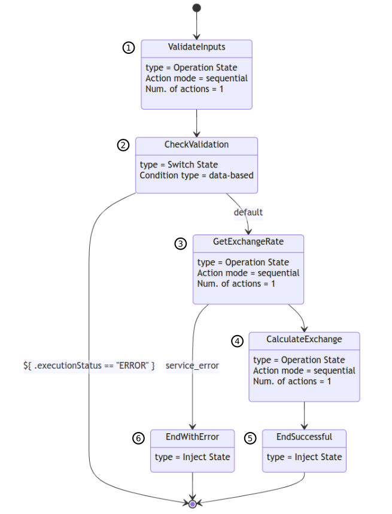

Orchestration of third-party services using OAuth 2.0 authentication in Serverless Workflow
This document describes the example of how you can implement and configure a Serverless Workflow that orchestrates the interaction with an OAuth 2.0 secured REST service.
For more information about orchestrating and configuring OpenAPI services, see Orchestrating the OpenAPI services, Configuring the OpenAPI services endpoints, and Authentication for OpenAPI services in Serverless Workflow.
Example of OAuth 2.0 orchestration in Serverless Workflow
To understand the example of OAuth 2.0 orchestration in Serverless Workflow, you can use the serverless-workflow-oauth2-orchestration-quarkus example application. This example application implements a workflow related to currency exchange calculations, which orchestrates an OAuth 2.0 secured REST service provided by Acme Financial Services.
Suppose you have a set of applications that must resolve the currency exchange calculations as their regular operations, and to resolve the currency exchange calculations, you need to get the accurate exchange rates. For this purpose, you can use the Acme Financial Services.
When you use the Acme Financial Services, you can query the exchange rates using their OAuth 2.0 secured services, which you can access using the granted credentials. However, you do not want to expose the services provided by Acme to the applications. In this case, you can implement a Serverless Workflow that resolves the following aspects:
-
Orchestration with services provided by Acme and currency exchange calculations.
-
Authentication requirements to access the services provided by Acme.
-
Potential vendor lock-in problems, in case you want to change the provider in future.
-
Domain-specific validations and optimizations.
The further sections describes how an end-to-end solution is created in the serverless-workflow-oauth2-orchestration-quarkus example application. To see the source code of serverless-workflow-oauth2-orchestration-quarkus example application, you can clone the kogito-examples repository in GitHub and select the serverless-workflow-examples/serverless-workflow-oauth2-orchestration-quarkus directory.
The serverless-workflow-oauth2-orchestration-quarkus example application contains the following services to compose the solution:
-
currency-exchange-workflow: Serverless Workflow that implements the currency exchange calculations. -
acme-financial-service: REST service that provides the exchange rates. -
acme-oauth2-server: Keycloak server that secures the REST services from Acme Financial Services.
The following figure describes the architecture of the solution in serverless-workflow-oauth2-orchestration-quarkus example application:

-
The application creates a Serverless Workflow instance to calculate the currency exchange.
-
The Serverless Workflow executes an OpenAPI operation to get the exchange rates information.
-
Authorizations are produced to validate the access.
-
The Serverless Workflow receives the exchange rates information and executes the calculations.
-
The execution of Serverless Workflow is finalized by sending the result to the application.
|
The Serverless Workflow automatically manages the interactions with the OAuth 2.0 server. Also, you must configure a Quarkus OpenId Connect Client (OIDC). For more information, see Configuration in |
currency-exchange-workflow-
The
currency-exchange-workflowinserverless-workflow-oauth2-orchestration-quarkusexample application is a Serverless Workflow that implements the currency exchange calculations.The following figure describes the workflow in
currency-exchange-workflow:Figure 2. Examplecurrency-exchange-workflow-
First, validate the input data.
-
Check the validation results:
-
If validation is successful, then transition to (3).
-
If validation is unsuccessful, then no transition and finalize the workflow with the error execution status.
-
-
Send REST request to
acme-financial-serviceto retrieve the exchange rates:-
If the request is successful, then transition to (4).
-
If the request is unsuccessful, then transition to (6).
-
-
Calculate the currency exchange and transition to (5).
-
Set the successful execution status and finalize the
currency-exchange-workflowexecution. -
Set the error execution status and finalize the
currency-exchange-workflowexecution.
The following
currency-exchange-workflow.sw.jsonfile shows the specification of thecurrency-exchange-workflow:currency-exchange-workflow.sw.json file{ "id": "currency_exchange_workflow", "version": "1.0", "name": "Currency Exchange SW", "dataInputSchema": "currency-exchange-workflow-schema.json", "start": "ValidateInputs", "functions": [ { "name": "validateInputs", "type": "custom", "operation": "service:org.kie.kogito.examples.ExchangeWorkflowHelper::validateInputs" }, { "name": "getExchangeRate", "type": "rest", "operation": "specs/acme-financial-service.yml#exchangeRate" }, { "name": "calculateExchange", "type": "expression", "operation": "${ { calculateExchangeResult: .amount * .exchangeRate } }" } ], "errors": [ { "name": "service_error", "code": "java.lang.Exception" } ], "states": [ { "name": "ValidateInputs", (1) "type": "operation", "actions": [ { "name": "validateInputsAction", "functionRef": { "refName": "validateInputs", "arguments": { "currencyFrom": "${ .currencyFrom }", "currencyTo": "${ .currencyTo }", "amount": "${ .amount }", "exchangeDate": "${ .exchangeDate }" } } } ], "transition": "CheckValidation" }, { "name": "CheckValidation", (2) "type": "switch", "dataConditions": [ { "condition": "${ .executionStatus == \"ERROR\" }", "end": true } ], "defaultCondition": { "transition": "GetExchangeRate" } }, { "name": "GetExchangeRate", (3) "type": "operation", "actions": [ { "name": "getExchangeRateAction", "functionRef": { "refName": "getExchangeRate", "arguments": { "currencyFrom": "${ .currencyFrom }", "currencyTo": "${ .currencyTo }", "exchangeDate": "${ .exchangeDate }" } }, "actionDataFilter": { "results": "${ {exchangeRate: .rate} }" } } ], "transition": "CalculateExchange", "onErrors": [ { "errorRef": "service_error", "transition": "EndWithError" } ] }, { "name": "CalculateExchange", (4) "type": "operation", "actions": [ { "name": "calculateExchangeAction", "functionRef": { "refName": "calculateExchange" }, "actionDataFilter": { "results": "${ {result: .calculateExchangeResult} }" } } ], "transition": "EndSuccessful" }, { "name": "EndWithError", (5) "type": "inject", "data": { "executionStatus": "ERROR", "executionStatusMessage": "Execution failed: The acme-financial-service invocation has failed, check that the service is running and that you have configured the OAuth2 client properly" }, "end": true }, { "name": "EndSuccessful", (6) "type": "inject", "data": { "executionStatus": "OK", "executionStatusMessage": "Execution successful" }, "end": true } ] }1 ValidateInputsstate executes thevalidateInputsfunction to validate the input data.2 CheckValidationstate determines the next state to go by evaluating the validation results.3 GetExchangeRatestate executes thegetExchangeRatefunction to retrieve the exchange rate from the remote server.4 CalculateExchangestate executes thecalculateExchangefunction to calculate the currency exchange.5 EndWithErrorstate finalizes the workflow with anERROR.6 EndSuccessfulstate finalizes the workflow with successfulOKstatus.The
validateInputsfunction is used to execute the custom Java processing as part of the Serverless Workflow. For more information about custom functions, see Serverless Workflow specification.The following is an example of
validateInputsfunction definition:ExamplevalidateInputsfunction definition{ "name": "validateInputs", (1) "type": "custom", (2) "operation": "service:org.kie.kogito.examples.ExchangeWorkflowHelper::validateInputs" (3) }1 validateInputsfunction declaration.2 customtype that enables you to use your own Java class to implement a function.3 Specifies that the function is implemented by the method validateIntpusin theorg.kie.kogito.examples.ExchangeWorkflowHelperJava class.To implement a custom function, you must create a Java class such as
ExchangeWorkflowHelperin your project:ExampleExchangeWorkflowHelper.javafilepackage org.kie.kogito.examples; import javax.enterprise.context.ApplicationScoped; @ApplicationScoped public class ExchangeWorkflowHelper { public ValidationResult validateInputs(String currencyFrom, String currencyTo, double amount, String exchangeDate) { // Implement your custom Java processing here and return // a Java POJO to the Serverless Workflow. if (!good) { return new ValidationResult("ERROR", "Not good!"); } return new ValidationResult(); } public static class ValidationResult { private String executionStatus; private String executionStatusMessage; // getters, setters, etc. } }To access the
acme-financial-serviceREST service incurrency-exchange-workflow, a Serverless Workflow function such asgetExchangeRateis used. For more information about using functions for REST services, see Serverless Workflow specification.Following is the function definition of
getExchangeRate:ExamplegetExchangeRatefunction definition{ "name": "getExchangeRate", (1) "type": "rest", "operation": "specs/acme-financial-service.yml#exchangeRate" (2) }1 getExchangeRatefunction declaration.2 Specifies that the function is implemented by the exchangeRateoperation in theacme-financial-service.ymlfile.For the previous configuration, the
acme-financial-service.ymlfile must be located in thesrc/main/resources/specsdirectory of the project.In order to filter the information, which must be returned to the
currency-exchange-workflow, anactionDataFilteris used:ExampleactionDataFilterto pass thegetExchangeRateresults"actionDataFilter": { "results": "${ {exchangeRate: .rate} }" (1) }1 Merge the value of the rateproperty to theexchangeRateworkflow data property. The value of therateproperty is retrieved from theacme-financial-serviceinvocation result.For more information about action data filters, see Action data filters in Serverless Workflow specification.
To calculate the currency exchange rates in
currency-exchange-workflow, a function namedcalculateExchangeis used:ExamplecalculateExchangefunction definition{ "name": "calculateExchange", (1) "type": "expression", (2) "operation": "${ { calculateExchangeResult: .amount * .exchangeRate } }" (3) }1 calculateExchangefunction declaration.2 expressiontype that enables you to use an expression to implement a function.3 Specifies that the function returns a JSON object with a calculateExchangeResultproperty, containing the calculation.For more information about using functions for expression evaluation, see Serverless Workflow specification.
Similar to
getExchangeRateto filter the information, which must be returned to thecurrency-exchange-workflow, anactionDataFilteris used:ExampleactionDataFilterto pass thecalculateExchangeresults:"actionDataFilter": { "results": "${ {result: .calculateExchangeResult} }" (1) }1 Merge the value of the calculateExchangeResultproperty to theresultworkflow data property. The value of thecalculateExchangeResultproperty is retrieved from the expression result. -
acme-financial-service-
The
acme-financial-serviceinserverless-workflow-oauth2-orchestration-quarkusexample application is a REST service that provides the exchange rates. Following is the OpenAPI specification that defines theacme-financial-service:Exampleacme-financial-service.ymlOpenAPI specification--- openapi: 3.0.3 info: title: Acme Financial Service API version: 1.0.1 paths: /financial-service/exchange-rate: (1) get: tags: - Acme Financial Resource operationId: exchangeRate parameters: (2) - name: currencyFrom in: query schema: type: string - name: currencyTo in: query schema: type: string - name: exchangeDate in: query schema: type: string responses: (3) "200": description: OK content: (4) application/json: schema: $ref: '#/components/schemas/ExchangeRateResult' security: - acme-financial-oauth: [ ] (5) components: schemas: ExchangeRateResult: (6) type: object properties: rate: format: double type: number securitySchemes: acme-financial-oauth: (7) type: oauth2 (8) flows: clientCredentials: (9) authorizationUrl: http://localhost:8281/auth/realms/kogito/protocol/openid-connect/auth tokenUrl: http://localhost:8281/auth/realms/kogito/protocol/openid-connect/token scopes: { }1 REST path to access the exchangeRateoperation in the remote server.2 Parameter of the exchangeRateoperation.3 Responses of the exchangeRateoperation.4 Response type and data exchange format. 5 Specifies that the exchangeRateoperation is secured using theacme-financial-oauthsecurity scheme.6 Response type specification. 7 Specification of the acme-financial-oauthsecurity scheme.8 Security scheme type. The security scheme type indicates that you must configure a Quarkus OpenId Connect Client (OIDC) using acme_financial_oauthname to execute the operation.9 Authentication flow and related information. For more information about the
acme-financial-serviceimplementation, seeacme-financial-serviceinserverless-workflow-oauth2-orchestration-quarkusexample application.
Configuration in serverless-workflow-oauth2-orchestration-quarkus example application
The configuration for the Serverless Workflow used in serverless-workflow-oauth2-orchestration-quarkus example application includes defining required properties in application.properties file as shown in the following example:
application.properties file configurationquarkus.openapi-generator.codegen.spec.acme_financial_service_yml.base-package=com.acme (1)
quarkus.rest-client.acme_financial_service_yml.url=http://localhost:8483 (2)
quarkus.oidc-client.acme_financial_oauth.discovery-enabled=false (3)
quarkus.oidc-client.acme_financial_oauth.auth-server-url=http://localhost:8281/auth/realms/kogito/protocol/openid-connect/auth (4)
quarkus.oidc-client.acme_financial_oauth.token-path=http://localhost:8281/auth/realms/kogito/protocol/openid-connect/token (5)
quarkus.oidc-client.acme_financial_oauth.client-id=kogito-app (6)
quarkus.oidc-client.acme_financial_oauth.grant.type=client
quarkus.oidc-client.acme_financial_oauth.credentials.client-secret.method=basic (7)
quarkus.oidc-client.acme_financial_oauth.credentials.client-secret.value=secret (8)| 1 | Package name for automatically generated classes that implement the access to all operations defined in the acme-financial-service.yml file. |
| 2 | Root URL to access all operations defined in the acme-financial-service.yml file. For the exchangeRate operation, a URL such as http://localhost:8483/financial-service/exchange-rate is automatically generated. |
| 3 | Disables the OAuth 2.0 server endpoints discovery as the endpoints provided in the acme-financial-service-yml file are used instead. |
| 4 | Authentication URL of the OAuth 2.0 server. |
| 5 | Relative path or URL of the OAuth 2.0 token endpoint, which allocates access and refreshes tokens. |
| 6 | Client ID to identify the Serverless Workflow against the authorization service, such as kogito-app. This identifier must be provided by Acme. |
| 7 | Method that is used at the time of sending the client-secret for the authentications when the client grant type is used. |
| 8 | client-secret to authenticate the Serverless Workflow against the authorization service when the client grant type is used. This secret must be provided by Acme. |
To configure the Quarkus OpenId Connect Client (OIDC) for acme_financial_service_oauth service, you must follow the rules described in Example of OAuth 2.0 authentication.
Also, the particular attributes depend on the OAuth 2.0 server and authorization flow to use. You can get the information about the OAuth 2.0 server and authorization flow from the acme-financial-service.yml file.
|
Also, you can use the alternatives defined in the Quarkus configuration reference guide to configure the properties in |
Running the example application
Once you clone the serverless-workflow-oauth2-orchestration-quarkus example application from GitHub repository, you can run the example application.
-
You have an account in GitHub.
-
Apache Maven 3.8.1 or later is installed.
-
In a command terminal, clone the
kogito-examplesrepository and navigate to the cloned directory:Clonekogito-examplesrepository and navigate to the directorygit clone https://github.com/kiegroup/kogito-examples.git cd kogito-examples/serverless-workflow-examples/serverless-workflow-oauth2-orchestration-quarkus -
Run the following command to build the example application using Apache Maven:
Build the example applicationmvn clean install -
In a separate command terminal window, start the Keycloak server:
Start the Keycloak servercd kogito-examples/serverless-workflow-examples/serverless-workflow-oauth2-orchestration-quarkus/scripts ./startKeycloak.shAlternatively, you can start the Docker Compose using the following command:
Start Docker Composecd kogito-examples/serverless-workflow-examples/serverless-workflow-oauth2-orchestration-quarkus/docker-compose docker-compose up -
In a separate command terminal window, navigate to the
acme-financial-servicedirectory and start the Quarkus application of Acme Financial Service:Start Acme Financial Servicecd kogito-examples/serverless-workflow-examples/serverless-workflow-oauth2-orchestration-quarkus/acme-financial-service java -jar target/quarkus-app/quarkus-run.jar -
In a separate command terminal window, navigate to the
currency-exchange-workflowdirectory and start the Quarkus application of currency exchange workflow:Start currency exchange workflowcd kogito-examples/serverless-workflow-examples/serverless-workflow-oauth2-orchestration-quarkus/currency-exchange-workflow java -jar target/quarkus-app/quarkus-run.jar -
When all the services are running, use the following
curlcommands to run thecurrency-exchange-workflow:curl -X 'POST' \ 'http://localhost:8080/currency_exchange_workflow' \ -H 'accept: */*' \ -H 'Content-Type: application/json' \ -d '{ "workflowdata": { "currencyFrom": "EUR", "currencyTo": "USD", "exchangeDate": "2022-06-10", "amount": 2.0 } }'{ "id": "399ce304-037c-486d-b4bf-1564baf907a1", "workflowdata": { "currencyFrom": "EUR", "currencyTo": "USD", "exchangeDate": "2022-06-10", "amount": 2.0, "executionStatus": "OK", "executionStatusMessage": "Execution successful", "exchangeRate": 1.0578, "result": 2.1156 } }curl -X 'POST' \ 'http://localhost:8080/currency_exchange_workflow' \ -H 'accept: */*' \ -H 'Content-Type: application/json' \ -d '{ "workflowdata": { "currencyFrom": "EUR", "currencyTo": "MXN", "exchangeDate": "2022-06-10", "amount": 2.0 } }'{ "id": "e0e7708d-c82c-47d7-9354-09ccd1e972bb", "workflowdata": { "currencyFrom": "EUR", "currencyTo": "MXN", "exchangeDate": "2022-06-10", "amount": 2, "executionStatus": "ERROR", "executionStatusMessage": "Invalid currencyTo: MXN, only the following currencies are supported [EUR, USD, JPY, GBP, CAD, BRL, AUD]", "exchangeRate": null } }In the previous examples, the currencies supported by the
currency-exchange-workflowincludeEUR,USD,JPY,GBP,CAD,BRL, andAUD. However, theacme-financial-serviceREST service can resolve any type of currency exchange. This is an example of a Serverless Workflow implementing the intermediate data filtering, transforming, and validations.curl -X 'POST' \ 'http://localhost:8080/currency_exchange_workflow' \ -H 'accept: */*' \ -H 'Content-Type: application/json' \ -d '{ "workflowdata": { "currencyFrom": "EUR", "currencyTo": "USD", "exchangeDate": "2022-06-10", "amount": 2.0 } }'{ "id": "0044ffa0-7b2b-4fdc-af60-cd98c6bd3ade", "workflowdata": { "currencyFrom": "EUR", "currencyTo": "USD", "exchangeDate": "2022-06-10", "amount": 2.0, "executionStatus": "ERROR", "executionStatusMessage": "Execution failed: The acme-financial-service invocation has failed, check that the service is running and that you have configured the OAuth2 client properly", "exchangeRate": null } }
Found an issue?
If you find an issue or any misleading information, please feel free to report it here. We really appreciate it!